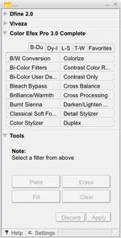
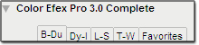
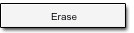
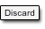
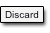

Originally, the Selective Tool was used to specify when to apply a Color Efex Pro 2.0 filter selectively to an image. As the popularity of Color Efex Pro 2.0 grew, photographers discovered that the Selective Tool offered more convenient access to filters than the Filters menu.
Color Efex Pro 3.0 makes this access more convenient by giving you the choice of selectively applying the filter in the Filter Interface. This lets you launch the Color Efex Pro 3.0 interface from either the Selective Tool or the Filters menu.
Click Color Efex Pro 3.0 in the upper left-hand corner of the Selective
Tool window to launch the application.
Filter Selection Tabs
Choose one of the Filter Selection Tabs to display the filters
available within each tab.

Favorites Tab
To add to your Favorites tab, you must be in the tab containing the desired filter. Then:
Right- or control-click on the name of the desired filter within the Selective Tool.
The Favorites tab of the Selective tool mirrors the Favorites tab of the Filter List.
Selection Tools
The Selective Tool contains four tools for applying the selected Color Efex Pro 3.0 filter.
Paint
Click the Paint button to selectively paint the current filter’s effect into the active image. Ensure that your Paint Brush mode is set to Normal and that Opacity is set to 100%. You can control the degree to which the effect is added to the image by varying the opacity of the brush.
Erase
Click the Erase button to selectively remove the current filter’s effect from the active image. Ensure that your Paint Brush mode is set to Normal and that Opacity is set to 100%. You can control the degree to which the effect is removed from the image by varying the opacity of the brush.
Fill
 Click the Fill button to apply the filter’s effect to the
entire image. This tool is especially useful if you want to apply
the filter’s effect to all but a small area. Click Fill,
then click Erase to remove the effect from the area to remain unaffected.
Click the Fill button to apply the filter’s effect to the
entire image. This tool is especially useful if you want to apply
the filter’s effect to all but a small area. Click Fill,
then click Erase to remove the effect from the area to remain unaffected.
Clear
 Click the Clear button to remove the filter’s effect from
the entire image. This is helpful if you made a mistake with the
Paint tool and want to start over.
Click the Clear button to remove the filter’s effect from
the entire image. This is helpful if you made a mistake with the
Paint tool and want to start over.
Apply / Discard
 Click Apply to apply the current filter’s effect to the
image. Click Discard to prevent the effect from being applied.
Click Apply to apply the current filter’s effect to the
image. Click Discard to prevent the effect from being applied.